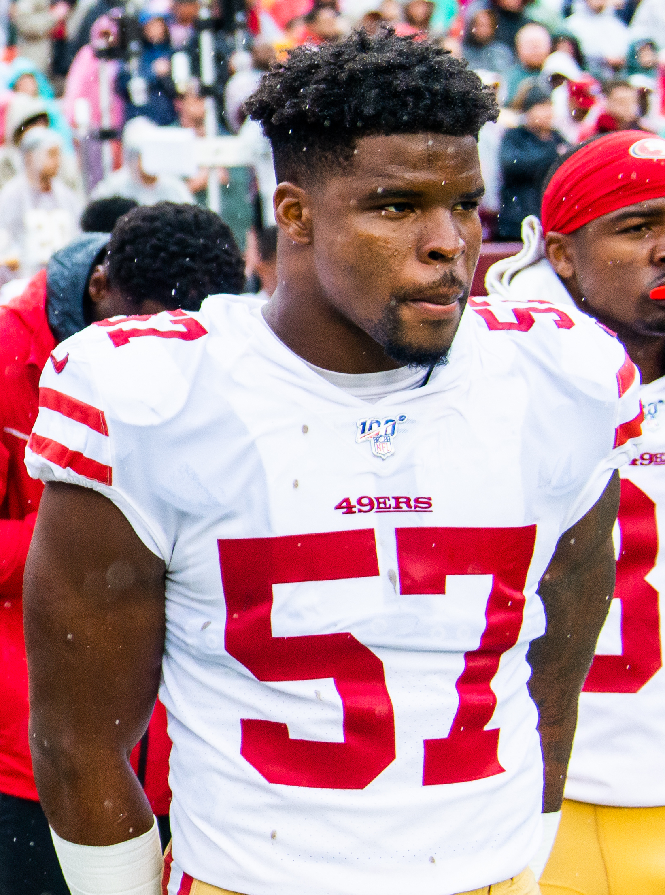

Dre Greenlaw Hit Too Hard on Day One of Pads, and Christian McCaffrey Still Calls Him His Favorite Player
First day in pads, and Greenlaw was already playing like it was January. McCaffrey didn't love being on the wrong end of it. He also hasn't stopped saying Greenlaw is his favorite player in the league. Both are true, and together they tell you everything about the temperature of this team walking into camp.

You can always tell when the pads go on, because the practice tape stops looking like a walkthrough and starts looking like football again. The 49ers got their first real look at that this week, and it took almost no time at all for Dre Greenlaw to remind everybody in the building why Kyle Shanahan and Fred Warner both talk about him like he's a different species of competitor. He was flying to the ball. He was finishing tackles the way he finishes them in December, not the way most guys finish them in a July practice they'd rather survive than win. And on at least one of those reps, the runner catching the brunt of it was Christian McCaffrey, who made it pretty clear afterward that he was not exactly thrilled to be Greenlaw's welcome-back-to-football tackling dummy.
That's the whole story in one image, and it's a great one: two of the most locked-in professionals on this roster, one of them mildly annoyed at the other for hitting too hard in a practice that technically didn't need to be that violent. If you didn't know anything about either guy, you'd read that and think it was the start of some beef. It's the opposite. It's what it looks like when a team's temperature is exactly where a contender wants it in late July.
Here's the part that actually matters, and it's not new information around this building even if it's still remarkable every time it comes up: Christian McCaffrey has said flat out that Dre Greenlaw is his favorite player in the entire NFL. Not just on the 49ers. In the league. That's not a throwaway line from a guy who has to be nice to his own linebacker for team-chemistry reasons. That's one of the most complete offensive players of his generation picking out a downhill, undersized, overachieving linebacker from Arkansas as the guy he respects most watching football. And then, days later, that same linebacker is the one lighting him up in a practice rep hard enough to get a reaction out of him. You couldn't script a better encapsulation of who Greenlaw is if you tried.
Because that's the whole scouting report on Dre Greenlaw, and it's been the scouting report since he tore his Achilles running onto the field for the Super Bowl and it barely slowed him down. He doesn't have a light switch. There isn't a gear where he decides a rep is low-stakes enough to coast through it. Fred Warner gets talked about as the brain of that defense and the best coverage linebacker in football, and that's earned. Greenlaw is the identity of it. He is the reason that defense hits like it's supposed to hit, the reason tempo in practice actually means something, and apparently the reason Christian McCaffrey walked away from day one of pads with a healthy amount of respect and a little bit of soreness.
And that's the thing about McCaffrey being irritated by it. This is a guy who has made a career out of never taking a snap off, who plays special teams reps other stars would never touch, who is as demanding of himself as anyone in that building. If Greenlaw hitting him too hard on day one got under his skin even a little, it's not because McCaffrey doesn't respect physical football. It's because McCaffrey holds everyone, himself included, to the standard where nothing is given away for free, not even a July practice rep. Two elite competitors pushing each other past the point of comfort on literally the first day pads went on: that's not friction, that's the exact mechanism that turns a talented roster into a standard-setting one.
This is the piece of the 49ers that doesn't show up in the McCaffrey-health storylines or the Bosa-and-Warner-are-back storylines, even though it should. This team has real veteran leadership left in the tank, guys who set the tone before a coach ever has to ask them to. Greenlaw doing what Greenlaw does on day one, and McCaffrey being just competitive enough to notice and say something about it, and underneath all of it a genuine, stated respect for each other as players: that's what a locker room with actual standards looks like in July. Not manufactured chemistry. Not preseason quotes for the cameras. Just two guys who are wired to compete against anything in front of them, including each other, and who happen to like and respect one another anyway.
Pads are on now. The real evaluation starts. And if day one told us anything, it's that Greenlaw showed up exactly like he always does, and that this team still has the kind of edge that can't be coached in from scratch. McCaffrey can be a little sore about how he found that out. Everybody else in Santa Clara should be thrilled about it.
More coverage: 49ers section · Columns · Bay Area Sports Blog home